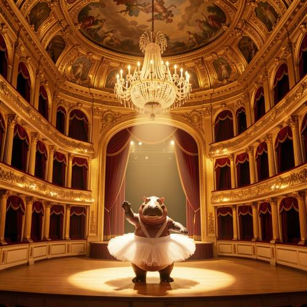
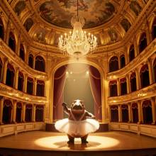
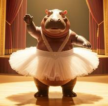

Action — Please design a magnificent Baroque Opera House interior, center stage
Please design a magnificent Baroque Opera House interior, center stage, a hippo wearing a tutu is elegantly curtain call.


Judge — Direct
- FAILAction - Full-body (Character/Anthropomorphic) — The hippopotamus is depicted standing still on a circular platform on stage. Its arms are slightly out to the sides, but it is not performing a bow, curtsy, or any other distinct action that clearly represents a 'curtain call.' It is in a static pose.
- PASSStyle — The opera house interior is depicted in a grand and opulent style. It features multiple tiers of curved balconies with gilded, ornate railings and decorations, red velvet curtains, a large painted mural above the proscenium arch, and a crystal chandelier. This aesthetic is consistent with the magnificent and decorative nature of the Baroque style.
- PASSCompound - Feature Matching — The image clearly shows a large, grey hippopotamus standing on a stage. The hippopotamus is wearing a pink, layered tutu around its waist.
Judge — Continuum
- PASSAction - Full-body (Character/Anthropomorphic) — The image shows a full-bodied, anthropomorphic hippopotamus standing on a stage. It is positioned with its body facing forward and one arm raised in a gesture that is consistent with taking a bow or acknowledging an audience, which represents a curtain call.
- PASSStyle — The interior of the building is designed in a Baroque style. This is visible in the opulent and ornate gold decorations, the multi-tiered, curved balconies, a large, elaborate crystal chandelier, and a painted fresco on the domed ceiling. The overall aesthetic is one of grandeur and intricate detail, characteristic of Baroque architecture.
- PASSCompound - Feature Matching — The central figure in the image is an anthropomorphic hippopotamus. This character is wearing a white ballet tutu around its waist and has white straps over its shoulders, forming part of the costume.
What the agent did
Thinking
Let's design this. Prompt: "A magnificent interior of a Baroque opera house, with a hippo wearing a tutu in the center of the stage, elegantly doing a curtain call." Key elements: 1. Magnificent interior of a Baroque opera house — ornate gold leaf, stucco decorations, balconies, chandeliers, red velvet, gilded moldings, frescoes. 2. Center stage. 3. A hippo wearing a tutu. 4. Elegantly doing a curtain call — bowing/taking a bow, perhaps with the curtain parting, spotlight, applause, etc. Let's generate with flux2-klein. First generate, then inspect, then edit as needed, then mark the best. Prompt: "Interior of a magnificent Baroque opera house, ornate gold-leaf stucco decoration, tiered golden balconies, red velvet curtains, a grand chandelier, frescoed dome ceiling, stage with parted red velvet curtains, in the center of the stage a pink hippo wearing an elegant white ballerina tutu standing on tiptoe, taking a graceful curtain-call bow, warm golden stage lighting, spotlight, opulent grand theater, rich detail, cinematic." Size: default 1024x1024. Should it be more landscape-oriented for an opera house? The size is fixed for comparison — the instructions say "the image size is fixed for comparison, so enlarging the canvas makes the result un-evaluable." So I should use the default 1024x1024 and not attempt outpainting. Okay, default it is. Let's generate.
Step 1 — `generate_image`
{
"model": "flux2-klein",
"prompt": "Magnificent Baroque opera house interior, opulent gold-leaf stucco, gilded columned balconies with red velvet drapes, frescoed dome ceiling, enormous crystal chandelier, a grand stage at center with red velvet curtains parted open, and standing at center stage in a warm spotlight, a chubby hippopotamus wearing an elegant white ballet tutu, gracefully taking a curtain-call bow with one paw raised, elegant, luxurious, cinematic warm golden lighting, rich ornate detail, theatrical atmosphere"
}Result img_0

Thinking
The image turned out great. Let me verify: - Interior of a magnificent Baroque opera house: yes — gilded stucco, balconies, chandelier, frescoed dome, red velvet drapes. ✓ - Center stage: the hippo is standing center stage, on the stage under the spotlight, with the curtain behind. ✓ - Hippo wearing a tutu: yes, a pinkish hippo with a white tutu on. ✓ - Curtain call: one paw raised and waving — that reads as a curtain call. ✓ Let me zoom in on the hippo and check the details, particularly the tutu and pose. Also check the face. Let me inspect the region around the hippo.
Model
The first generation looks strong. Let me zoom in to verify the hippo, tutu, and curtain-call pose.
Step 2 — `inspect_region`
{
"image": "img_0",
"roi": [
"the hippo wearing the tutu on stage"
]
}Thinking
The roi should be a string, not a list. Let's pass the string directly.
Step 3 — `inspect_region`
{
"image": "img_0",
"roi": "the hippo wearing the tutu on stage",
"padding": 0.1
}Result img_1

Thinking
Hippo looks good — it's wearing a white tutu (classical ballet tutu with bodice straps), raising one paw as if waving, taking a curtain call. The face is a bit goofy/blank, but as a cartoon-ish hippo ballerina it's within acceptable range, and it's charming. The tutu looks nice. Is the pose "a graceful curtain call"? One paw is raised and waving — that's the classic curtain call pose (waving to the audience). Good. Everything is present: - Interior of a magnificent Baroque opera house ✓ - Center stage ✓ - Hippo in a tutu ✓ - Curtain call ✓ This is good enough to submit. Let me mark img_0 as the best. Should I improve it further? The hippo's expression is a bit deadpan, but it's a cute, charming style. The prompt is satisfied. According to the guidelines, "good enough is a stopping condition." I'll mark it as the best and be done.
Model
The cropped image confirmed that all the main elements are in place: the hippo is wearing a proper classical white ballet tutu (with bodice and straps), and with one paw raised in a graceful waving motion, it's taking its bow (curtain call) in the center of a stage bathed in a golden spotlight. The Baroque interior is magnificent too—gilded stucco, frescoed domes, crystal chandeliers, red velvet curtains, and gilded balconies. This matches the prompt well, so I'll mark it as my best result.
Step 4 — `mark_best`
{
"image": "img_0",
"reason": "All requested elements present: magnificent Baroque opera house interior with gilded stucco, chandelier, frescoed dome and red velvet; hippo in a white ballet tutu at center stage in a spotlight, one paw raised in a graceful curtain-call wave."
}Thinking
I'll stop here. The image satisfies the prompt: an interior of a magnificent Baroque opera house, a stage in the center, a hippo wearing a tutu, an elegant curtain call. I'll mark img_0 as the best. Done.
Model
Done! The final image is a magnificent Baroque opera house interior — gold-leaf stucco, a frescoed dome, a grand crystal chandelier, and tiered gilded balconies with red velvet drapes. At center stage, under a warm spotlight with the velvet curtains parted behind, a round pink hippo in a white classical ballet tutu takes a graceful curtain call, one paw raised in a waving bow to the audience.